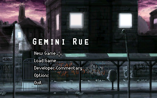
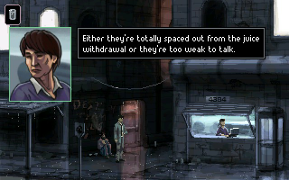
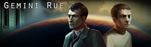

Gemini Rue
Dieser Artikel wurde für die folgenden Ubuntu-Versionen getestet:
Ubuntu 16.04 Xenial Xerus
Ubuntu 14.04 Trusty Tahr
Zum Verständnis dieses Artikels sind folgende Seiten hilfreich:
Gemini Rue  (ehem. Boryokudan Rue) ist ein kommerzielles Adventure aus dem Hause Wadjet Eye Games, das auf der Spiele-Engine von Adventure Game Studio basiert. Die düstere und atmosphärische Film noir-Geschichte spielt im Jahre 2229.
(ehem. Boryokudan Rue) ist ein kommerzielles Adventure aus dem Hause Wadjet Eye Games, das auf der Spiele-Engine von Adventure Game Studio basiert. Die düstere und atmosphärische Film noir-Geschichte spielt im Jahre 2229.
Im Gemini Sektor landet der ehemalige Attentäter Azriel Odin auf dem Planeten Barracus und benötigt Hilfe... Am anderen Ende der Galaxie erwacht Delta-Six ohne Gedächtnis in einer Forschungsanlage und versucht zu fliehen... Das Schicksal bringt beide Charaktere zusammen...
|  |  |
| Menü | Spielszene |
Installation¶
CD-Version¶
In der deutschen CD-Version, welche von der Daedalic Entertainment GmbH vertrieben wird, sind deutsche Sprachpakete enthalten. Um diese verwenden zu können, muss man die Cabinet-Datei data1.cab entpacken [7].
Die anderen Cabinet-Dateien enthalten das Spiel in der Originalsprache, den Soundtrack und Bonusspiele.
Entwicklerseite¶
Nach man das Spiel Gemini Rue erworben hat, kann man es von der persönlichen Seite herunterladen.
innoextract¶
Anschließend den Titel entpacken [1]:
innoextract -L GeminiRue_Setup_v15.exe
Die Ausgabe sieht wie folgt aus:
Extracting "Gemini Rue" - setup data version 5.3.10 - "app/gemini rue.exe" (59.1 MiB) - "app/acsetup.cfg" (322 B) - "app/ags_shell.dll" (40 KiB) - "app/audio.vox" (62.8 MiB) - "app/gemini rue manual.txt" (3.83 KiB) - "app/preload.pcx" (7.27 KiB) - "app/speech.vox" (145 MiB) - "app/winsetup.exe" (68 KiB) Done.
Den Ordner app in Gemini-Rue umbenennen und in das gewünschte Verzeichnis, z.B. ~/Spiele/, verschieben.
Spiel-Engine¶
Um das Spiel unter Linux nativ verwenden zu können, ist es notwendig, die Spiele-Engine zu erstellen [2]. Nachdem dieser Zwischenschritt vorgenommen wurde, kann das jeweilige Spiel mit
ags ~/Spiele/Gemini-Rue/gemini\ rue.exe.
gestartet [3] werden. Auf Wunsch einen Menüeintrag [4] vornehmen. Alternativ kann ein Startskript verwendet werden.
Startskript¶
Im Homeverzeichnis den Ordner ~/bin/ anlegen und die Datei Gemini-Rue.sh mit dem folgenden Inhalt erstellen [5]:
1 2 3 | #!/bin/sh export LD_LIBRARY_PATH=.:$LD_LIBRARY_PATH exec ags ~/Spiele/Gemini-Rue/gemini\ rue.exe. |
Nach dem Setzen der Ausführrechte [6] kann das Spiel über Gemini-Rue.sh gestartet [3] werden.
Konfiguration¶
Die Konfigurationsdatei acsetup.cfg aus dem Spieleordner kann mit einem Editor bearbeitet werden.
Tastenkürzel¶
| Tastenkürzel | |
| Taste(n) | Funktion |
 | Standardaktionen ausführen / Doppelklick macht dies rückgängig |
 | Interface aufrufen |
| F1 | Hilfe |
| F5 / F7 | Spielstand speichern / laden |
| F9 | Spiel neu starten. |
| F10 | Automatisch gespeicherten Spielstand laden |
| Esc | Menü |
| Strg + Q | Spiel beenden |

Infobox¶
| Gemini Rue - Verschwörung auf Barracus | |
| Originaltitel: | Gemini Rue |
| Genre: | Science-Fiction-Adventure |
| Sprache: | |
| Veröffentlichungen: | 2011 |
| Publisher: | Wadjet Eye Games |
| Systemvoraussetzungen: | 1.5 GHz Prozessor / 256 MB Arbeitsspeicher / 500 MB Festplattenspeicher |
| Medien: | CD (1) / Download |
| Strichcode / EAN / GTIN: | 4009750501986 |
| Läuft mit: | nativ |

 - Bonusspiel CD-Version
- Bonusspiel CD-Version- Erstellt mit Inyoka
-
 2004 – 2017 ubuntuusers.de • Einige Rechte vorbehalten
2004 – 2017 ubuntuusers.de • Einige Rechte vorbehalten
Lizenz • Kontakt • Datenschutz • Impressum • Serverstatus -
Serverhousing gespendet von